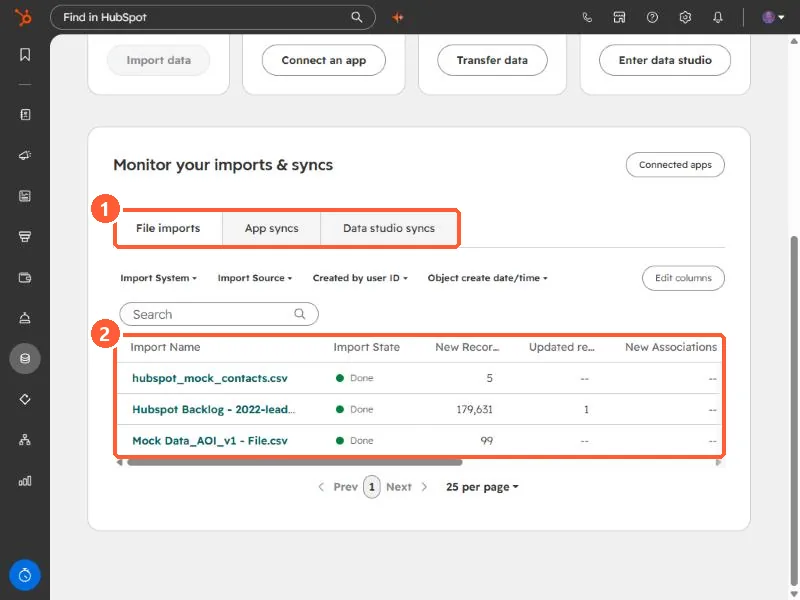
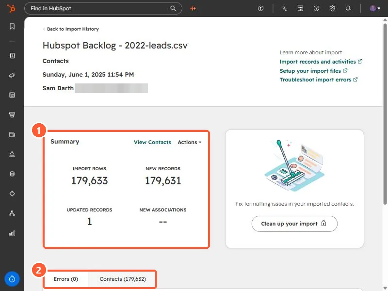
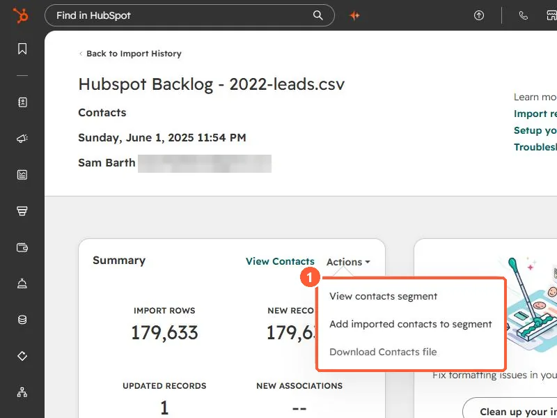

Short answer
Go to Data Management, Data Integration and open the import on the File imports tab. The Summary card shows import rows, new records, updated records, and new associations. Its Actions menu lets you view the imported records as a segment, add them to a segment, or download the file. HubSpot says original files and use-as-template are available for imports completed in the last six months.
1. Import history
Open Data Integration and scroll to Monitor your imports & syncs. The File imports tab lists every import with its state and counts. Filters let you narrow by import source, the user who created it, and date.


2. The import details page
Click an import's name. This one created 179,631 new contacts and updated 1.


- Summary. Import rows, new records, updated records, and new associations.
- Errors tab. Lists any rows that failed. HubSpot shows a checkmark when there are none. This one has 0.
- Clean up your import appears on the right to fix formatting issues in the imported contacts.
3. The Actions menu


- View contacts segment opens the records from this import.
- Add imported contacts to segment adds them to a new or existing segment, so a follow-up workflow or email can target exactly this batch.
- Download Contacts file gets the original file back. HubSpot says this works for imports completed in the last six months.
HubSpot also offers using a past import as a template for a new one, for imports completed in the last six months. For using an import to update existing records, see enrich records with a Record ID import.